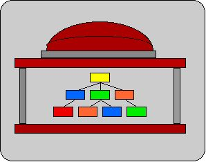

View a Qualifier Tree in the Roles DB with MDEPT links
Pick a qualifier type:
BAGS - NIMBUS Budget Authorization Groups
COST - Standard Profit Center Hierarchy
FUND - Funds Centers
LORG - LDS org units
ORGU - old 6-digit HR org units
ORG2 - new 8-digit HR org units
PBM1 - PBM hierarchy: Program Budget Management
PMIT - PCMIT-0 nodes and Profit Centers
SISO - SIS Admissions Orgs
SPGP - Spending Groups
Number of levels:
1
2
3
4
5
6
7
all
Show MDEPT links
from what view(s)?
All
A. Compact DLC Hierarchy
B. Standard Hierarchy
Format option:
Show Dept_code on the left side of page
Show Dept_code to the right of qualifier name
Qualifier code
(optional):